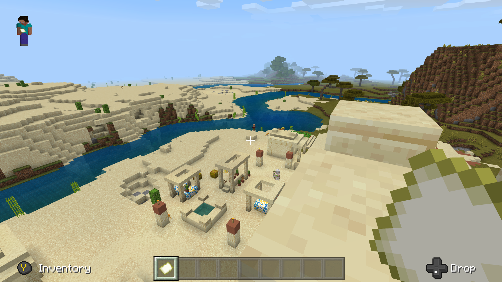
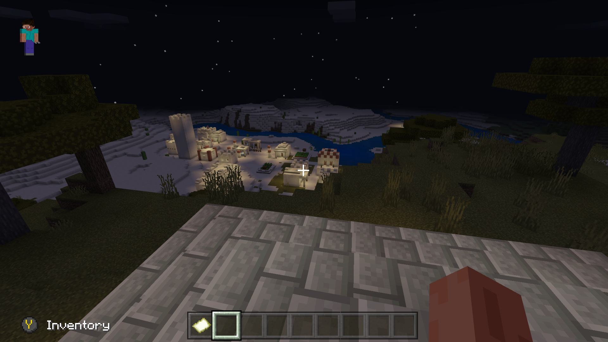

Minecraft, since the beginning 10 years ago in 2011, has always been popular.
It’s dipped in and out of being mainstream on platforms such as YouTube.
This open world craft survival game even has its own speedruns!
I’ve been playing Minecraft on and off for years, it's always interesting to load up
and create a new world and see where it places you.
I’ve always liked the easy starts of spawning next to villages for the easy food so
I can concentrate on finding a cool place to build my house.


I admit I’ve never made it to the End so I’ve never completed the game by killing the Ender Dragon,
but I’ve had lots of fun building farms and exploring the over world.
That’s the great thing about Minecraft is that it is very freeform, you don't need to go to the
End or even the Nether, just play it however you want.
You can play single player or multiplayer through good old split screens,
sharing a world or chucking a few pounds Microsoft's way and getting a Realm to share.